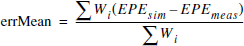
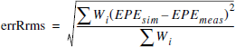
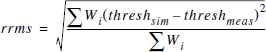

Runs a simulation using the models defined in the setup file to produce output model fitness statistics.
modelfitness -ss ssfile [-f setup] [-m gds] [-spec nleSpec leSpec]
Output statistics returned are shown in Table 1:
Statistic |
Description |
|---|---|
errMean |
EPE error weighted mean:  |
errRrms |
EPE error weighted root mean square: |
spec |
number of EPE errors in spec (simEPE - measEPE, both LE and NLE) |
errLE |
max line end EPE error (simEPE - measEPE) |
errNLE |
max non-line end error (simEPE - measEPE) |
msCorr |
correlation of (modelEPE, empiricalEPE), using weights |
R2 |
R-square coefficient of (modelThresh, empiricalThresh), using weights |
adjR2 |
adjusted R-square of (modelThresh, empiricalThresh), using weights |
rrms |
threshold weighted root mean square:  |
The output is returned in the form of a string consisting of ordered stat/value pairs: {stat1 val1 … statN valN}.
A required keyword and value pair specifying the sample spreadsheet file containing the sample data.
An optional keyword and value pair specifying the setup file to use for the simulation. This argument is only optional if a setup file has already been loaded into the application; otherwise, it is required.
An optional keyword and value pair specifying the GDS test pattern file. This argument is only optional if a GDS file has already been loaded into the application; otherwise, it is required.
An optional keyword and its values, used to define the allowed tolerances for the model.
leSpec defines the line-end tolerance specification in nanometers. The default is 20nm.
nleSpec defines the non-line-end (i.e. line or space) tolerance specification in nanometers. The default is 5nm.
% set ans [modelfitness -m tp180.gds -f setup.in -ss tp180.ss -spec 5 20]
% array set stats $ans
% puts $stats(errMean)
--> 2.6
Another run without need of specifying GDS or setup.
% set ans [modelfitness -ss tp180.ss -spec 5 20]